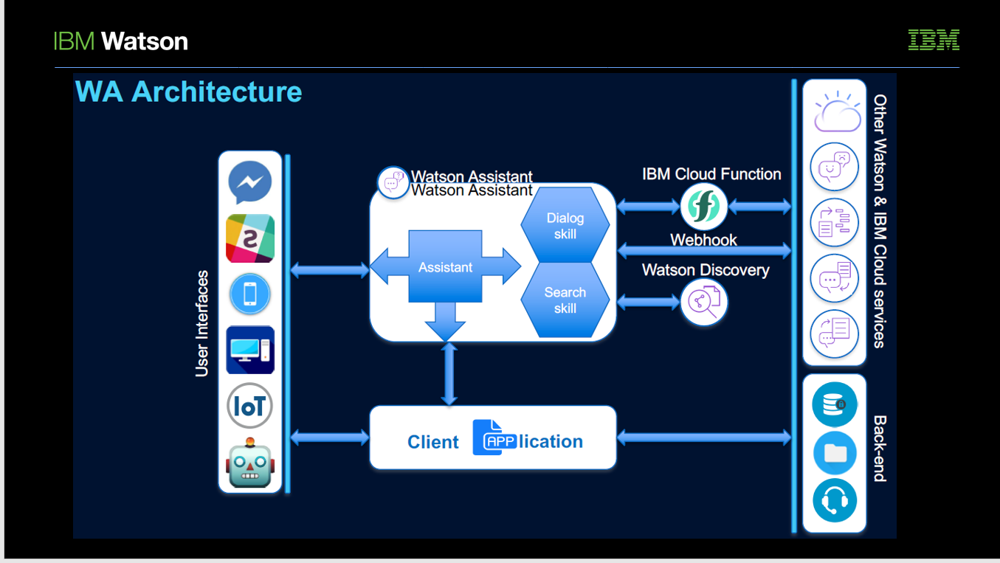
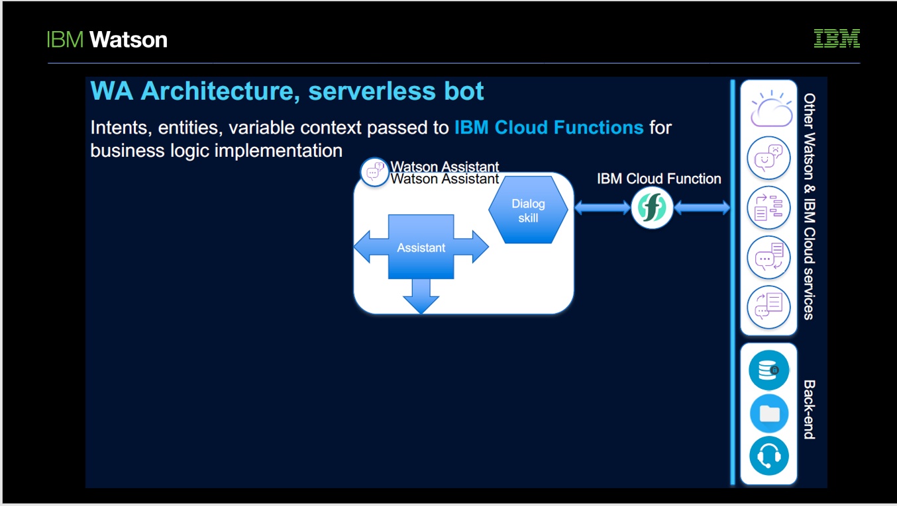
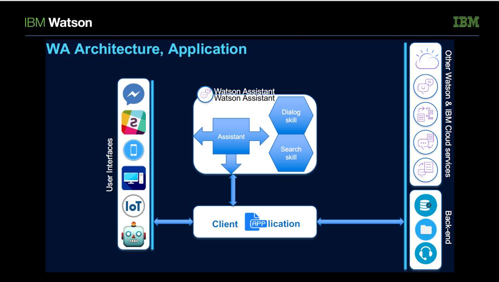
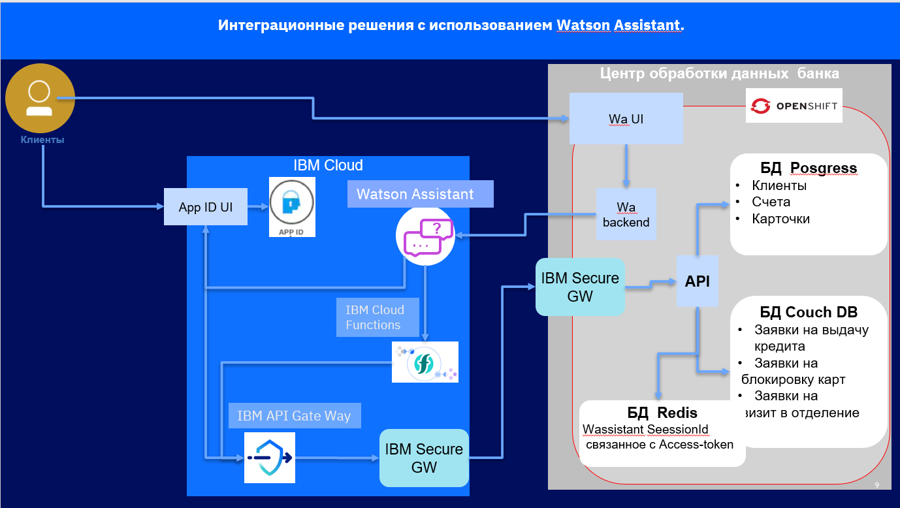
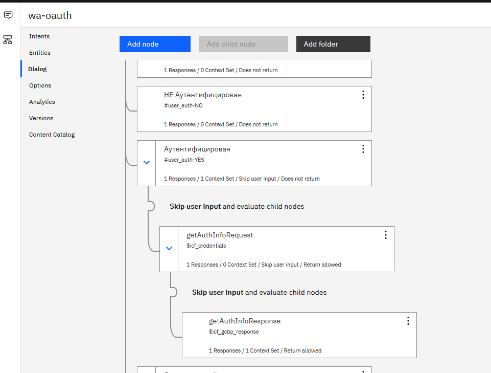
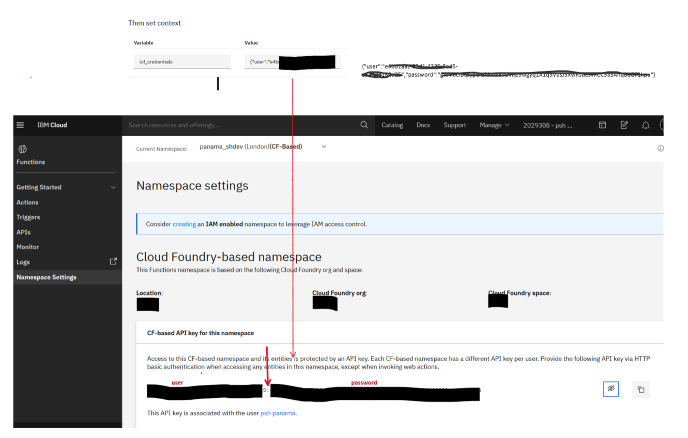
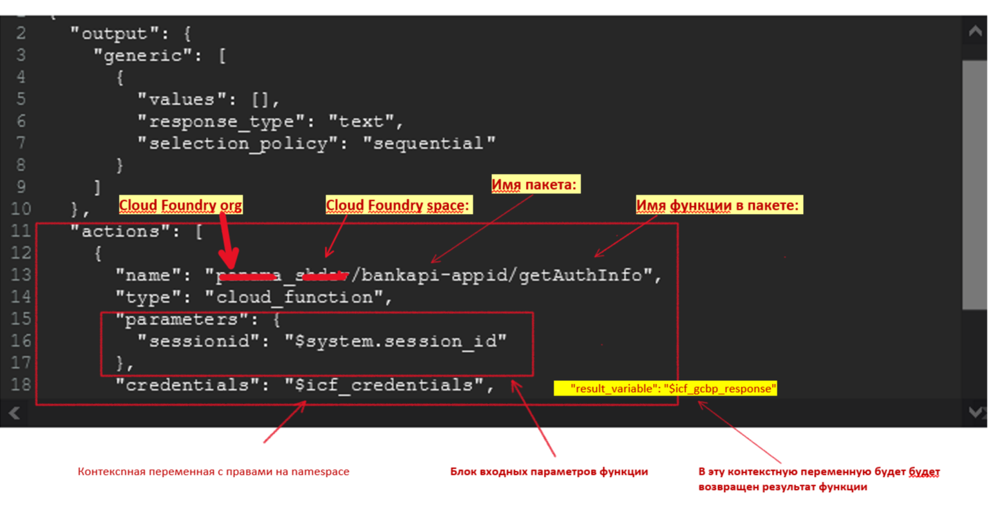
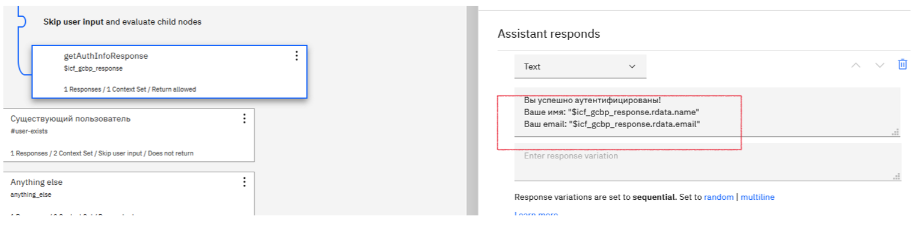
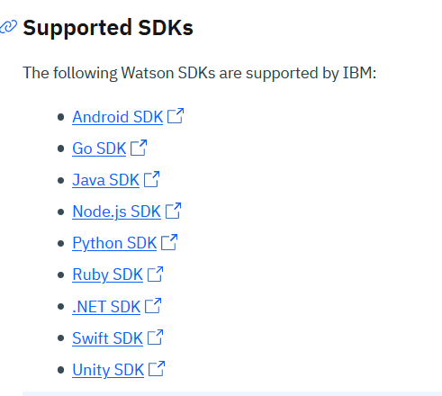
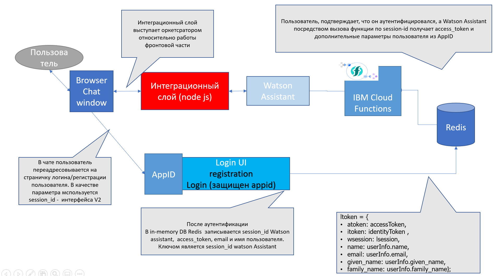

Целью этой работы является построение модели чат бот на базе Watson Assistant с использованием нескольких вариантов интеграции.
Возможные варинаты интеграции с Watson Assistant, показаны на рисунке pic-1 :

pic-1
В этой работе мы рассмотрим только интеграцию через IBM Cloud Functions 
pic-2
и через Custom integration, через клиентское приложение pic-3.

pic-3
Как Watson Assistant буде встроен в существующую модель банка, показано на pic-4 
pic-4
Самым удобным элементом для вызова внешних сервисов из Watson Assustant являются IBM Cloud Functions.
Вызов функции выполняется прямо из диалога Watson Assistant путем ввода параметров в JSON обьект диалога. На pic-5 показан диалог вызова одной функции.

pic-5
Для вызова нужно:

pic-6

pic-7
Все, Watson Assistant готов для вызово функций. Только функция должна уже существовать. Фнкция может возвращать иерархический набор данных. Как получить доступ к возвращаемым данным, показано на pic-8.

pic-8
Для разработки интеграции со специфическими требованиями предоставляются SDK для большинства популярных платформ: pic-9

pic-9
Ваше custom application может быть размещено, как в облаке, так и on-Premises. Существуэт два варианта интерфейсов по интеграции с Watson Assistant:
V1: очень универсальный и широкий. С его помощью можно програмно написать skill;
V2: - защищенный интерфейс только для обмена сообщениями. Имеет идентификатор сессии чата.
Custom integration возникает, когда нужно разработкать специфичкский фронт или вызывать дополнительные сервисы или интегрироваться с социальными сетями.
В качестве пример комплексной интеграции проделана попытка интегрироваться с сервисом IBM Cloud App-ID, который позволяет быстро и легко добавить аутнетификацию в Web и мобильные приложения. На pic-10

pic-10
показан workflow процесса ацтентификации.